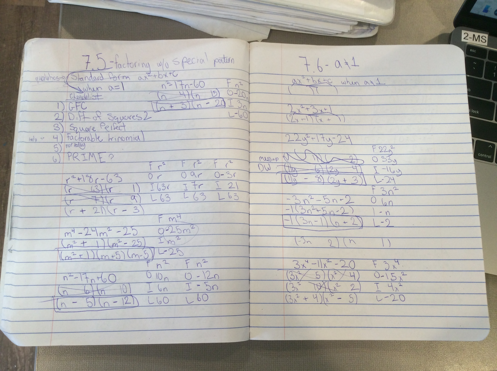

Goal
Math Artifact
My math artifact is my notes from lesson 7.5 and 7.6 in math class. This represents my new strength of working independently. In math it is extremly hard to take notes with a partner. In general it is hard to take notes in groups. It is really hard because the people would have to share the same paper and it is hard for most people to share a small piece of paper. I think I did really good on this test. We just recently took it so I don't actually know what I got but I have a good feeling.
